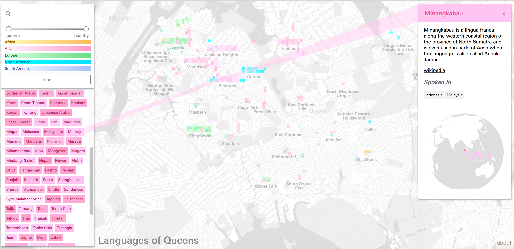
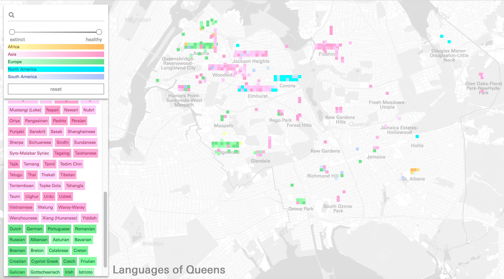
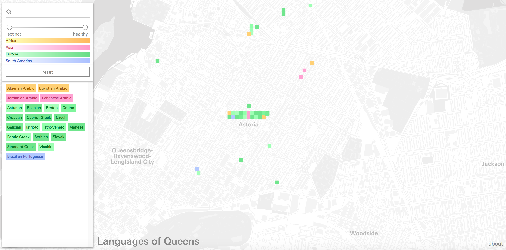
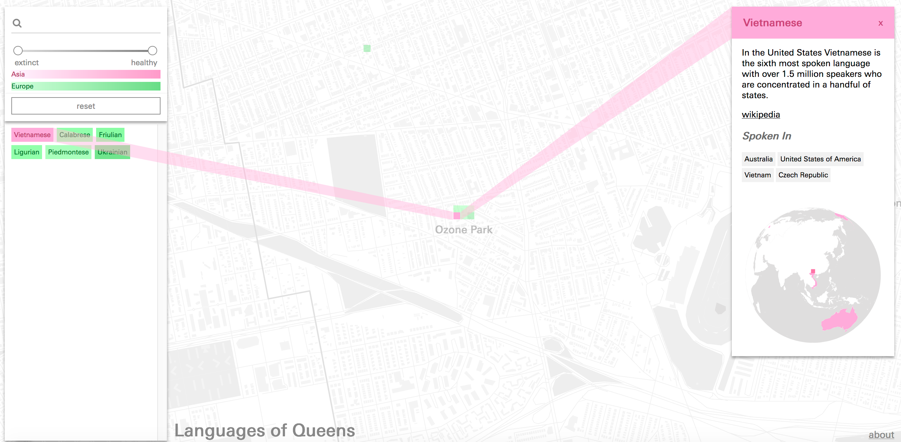
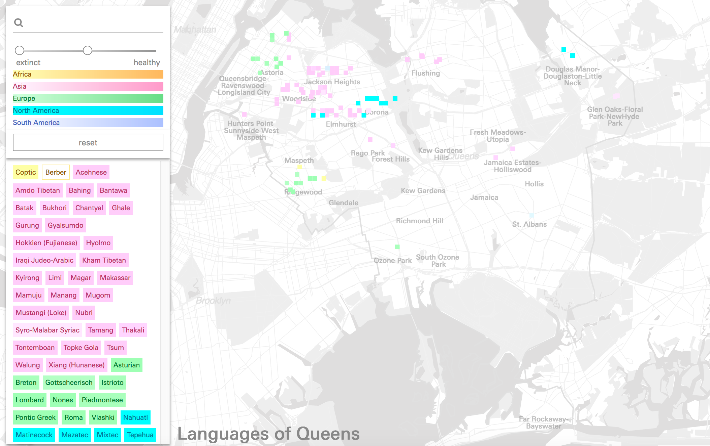

Beyond the Census:
 Introduction
IntroductionNew York City is often considered the most linguistically diverse place in the world, and nowhere is that more apparent than in Queens. For generations, Queens has attracted immigrant families with its low rent and access to global communities. The results of this migration is a multilingual community where languages from across the globe can be found. It has also created the unique situation where some endangered languages find their last home in New York City, carried in the minds of the last speakers. Beyond the Census: Languages of Queens traces those connections, focusing on how the local connects to the global and back to the local.

Some Minangkabau speakers live in Elmhurst, though the language originates in North Sumatra
The languages we speak, especially those we speak at home, are deeply tied to identity and community. Whether in accent or language, our words give us away as belonging to a certain speech community, connecting us with some, and dividing us from others. Though invisible, languages tie people and places together. And yet, in a highly multilingual, urban setting, what does that mean for the people and the place?
Drawing on a qualitative and often anecdotal dataset provided by the Endangered Language Alliance, this project seeks to answer this question, illustrating the ways that language connects Queens to the world and where the world finds its home in Queens.
This project presented some very specific design challenges as well. First, given the qualitative and anecdotal nature of the dataset, standard approaches to representing the languages would not be applicable. And yet, there is a quantitative component that we sought to encode without taking away from the qualitative.
Data

Main page showing all of the languages in this dataset
The data for the Queens Language map was provided by the Endangered Language Alliance - it documents (in a non-comprehensive, anecdotal way) sites throughout Queens where they know certain languages are spoken.
These language-place pairs vary considerably in both specificity and scale, ranging from entire neighborhoods to street corridors or intersections, to storefront churches, community centers and cafes, where one or more of the nearly 200 languages in the dataset are spoken.
Beyond this variable geographic specificity, some of the data points even lack fixed geographic locations, representing single individuals, food carts, or traveling performance groups known to the ELA.
In order to better visualize the data, and to ensure consistency of structure as new data was added, we split the table into multiple collections, adding additional information to the records when possible.
These collections were as follows:
- Languages Added countries and continents spoken, geographic point of origin based on additional data from the Glottolog language database. Also assigned probable linugua francas for sorting purposes.
- Institutions Assigned point geometry from addresses where available, otherwise manually by online search for institution, related events and individuals etc.
- Continents Assigned polygon geometry from geojson world map in the public domain.
- Countries Assigned polygon geometry from geojson world map in the public domain.
- Neighborhoods Assigned polygon geometry from NYC Neighborhood Tabulation Areas, available from city open data portal.
Designing the Map
Variable Geographic Specificity & Map MarkersThrough an iterative design process the project developed a visual language which aims to work within the productive contraints of this anecdotal dataset. To bridge between the wide range of geographic specificity encoded for each language a series of map markers was developed that while sharing certain visual elements, also incorporated unique features. The individual colored squares represent institutions where the actual address or location information is visible, and the small rectangular grids of colored squares represent the total and variety of different languages spoken in a given neighborhood. This strategy aims to accurately represent the geographic information in the dataset while avoid issues with double-representation.
Besides representing sites of language practice in a static way, these map markers also function as interactive elements, allowing the user to obtain more information about one of the languages in the cluster, or the institution/geography in question.

Language spoken in Astoria
The Globe
Since each language entry carries with it information about its point of origin in the world and other regions where there are high concentrations of speakers, the map features a globe where these global-scale sites of practice can be visualized. Each site is rendered using a marker from the same set used in the borough map, creating a visual correspondence between local and global sites of practice.

Vietnamese originates in Vietnam, but there are many speakers in Australia, the United States, and the Czech Republic.
List/Legend
Using color alone, or even a combination of color and symbols, distinguishing between each of the languages in a list of almost 200 items is impossible. The map features a list of all the languages as a separate panel, grouped by continent of origin (each of which is assigned a primary color) and further sorted by level of language endangerment (which determines the lightness of the continent base color). Each language, labeled in the list, can be clicked to highlight its sites of practice in the map of queens and on the globe.

List showing only endangered languages, sorted using the slider.
Throughout our conversations with the ELA, we discussed the idea of user-generated data being added to the map. While the preliminary database generated by the ELA through their fieldwork would form the basis for the entire map at first, the possibility that users could enter their own languages, landmarks, and origins at a later time promised to build a much more expansive and detailed dataset over time.
To facilitate the expansion of this project, we sought to build a platform capable of receiving new data from users in the future and ensuring a consistent structure and format.
Conclusions
Recently, Rebecca Solnit and Joshua Jelly-Schapiro edited a volume, "The Non-Stop Metropolis," which included a map also using a dataset provided by the Endangered Language Alliance, entitled, "Mother Tongues and Queens" (Molly Roy and Mirissa Neff). This map identified many of the languages represented here. While there are a great many similarities between that map and this one, they serve vastly different purposes, and have radically different end results.This map is meant to be played with, it invites users to zoom in and out, explore the areas around the languages, and understand the relationship between the languages and each other, how they are situated, where they meet, and where they don't. We have also included what is missing, highlighting that so little is known about African languages in Queens, though we can be fairly certain that the ones we included are there.
Likewise, by layering the glottolog data, endangerment status, and additional information, we have offered users the opportunity to interact with the languages of Queens, ask questions about them, and find out more information. We invite users to play, and in many ways, find answers to their own questions. This map can be viewed through a region of origin lens, an endangerment lens, or a global lens. Rather than being presented with one static story, the user is invited to go deeper, following links to Wikipedia and Ethnologue.
Ultimately, this interactive, web-based format gave us the chance to offer the user and outlet for their curiosity about languages in Queens, illustrating not only the staggering diversity of the borough as a whole, but the hotspots where people from different geographic regions come together. In the future, we hope that others will be able to add their own story to this map, and share their language with the world.
Project Team: Laura Kurgan, Michelle McSweeney, Carsten Rodin, Tola Oniyangi, and Dare Brawley with the Endangered Language Alliance
Return to Case Studies